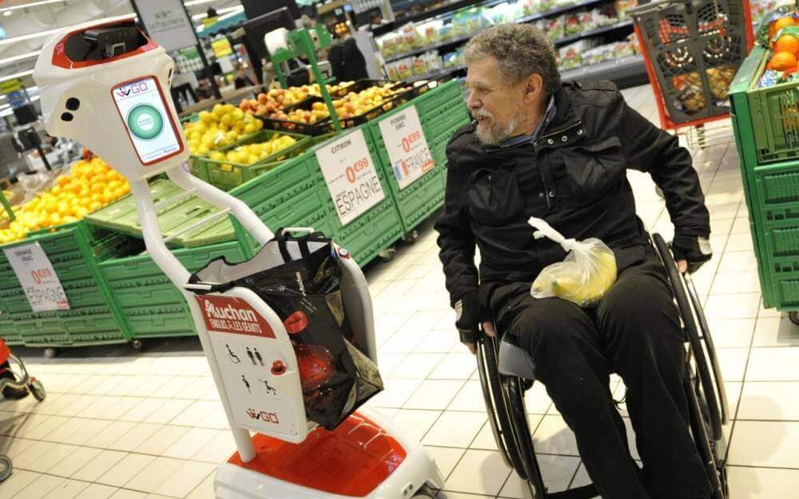
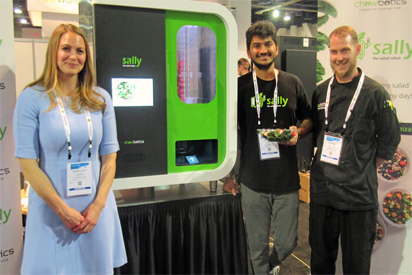
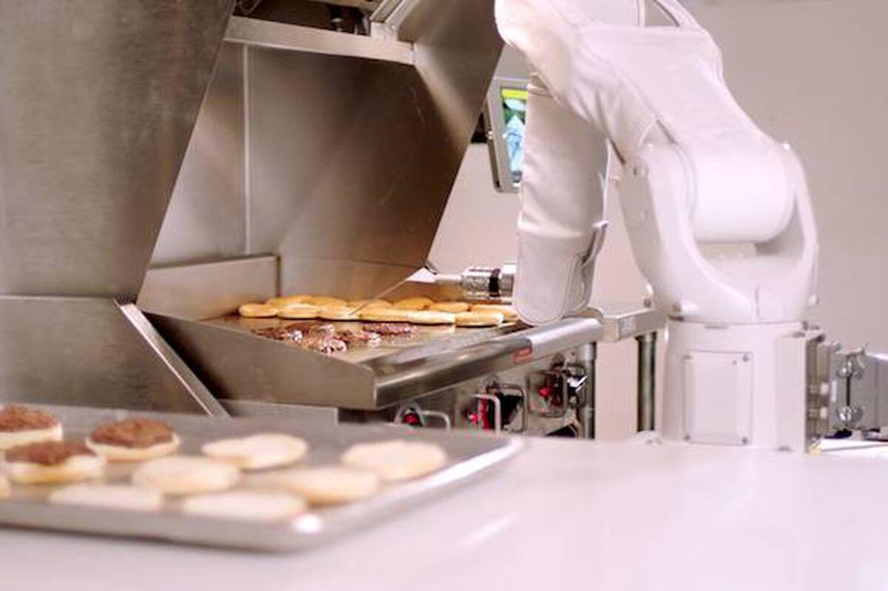
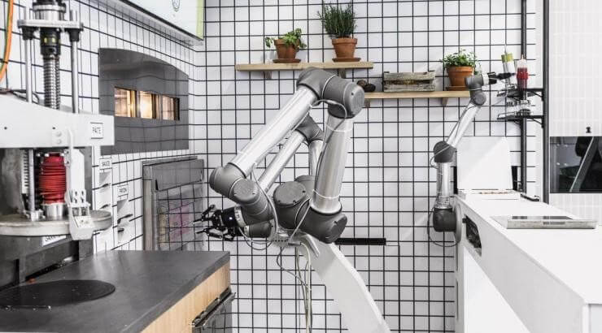
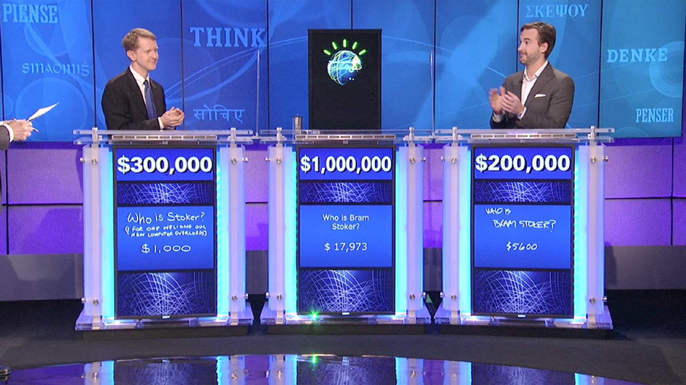

I. Avantages de l’IA
Les robots qui sont la forme la plus fréquente d'IA facilitent le travail humain en rendant les tâches moins fatigantes pour l'homme. Ils sont courants en entreprises, mais nous pouvons en trouver dans tous les domaines :
1. Dans le domaine commercial
1 / 4

WiiGo, un caddy-robot qui vous suit et vous aide à faire vos courses.
Le système de reconnaissance visuelle identifie la personne, lui permettant ensuite de suivre celle-ci partout dans le magasin.
2 / 4
Livraison à domicile des colis par des drones (Amazon et Google).
Les livraisons par drones sont actuellement expérimentées en Australie et en Grande-Bretagne.
3 / 4

Aux États-Unis, de plus en plus de start-up développent des robots pour automatiser diverses tâches dans l'univers de la restauration. Chowbotics a ainsi conçu un robot pour préparer des salades.
4 / 4

De même, le robot Flippy qui prépare des burgers, conçu par la start-up Miso Robotics et Cali Group. Doté de caméras, de capteurs thermiques et d'algorithmes d'intelligence artificielle, ce bras robotisé a été programmé pour placer les steaks sur le grill, les retourner au bon moment et les déposer entre les deux pains du hamburger.
4 / 4

Deux ingénieurs français ont créé le robot "Pazzi" capable de réaliser une pizza très rapidement, en moins de cinq minutes. Un premier restaurant pilote ouvrira ses portes à Paris ou au Val-d’Europe d’ici à la fin de l’année.
❮
❯
2. Dans le domaine médical
1 / 2
Paro
C'est un robot thérapeutique à l’attention des personnes atteintes de la maladie d’Alzheimer et de démences. Il réagit quand on le touche, il peut exprimer sa joie, sa tristesse, son mécontentement . Il sait reconnaître des voix et des prénoms. Il favorise la communication et les interactions sociales, apaisent et diminue les troubles du comportements et s’accompagne souvent d’une baisse des médications.
2 / 2

Watson
C'est un ordinateur développé par IBM, qui a participé au jeu télévisé Jeopardy (jeu de culture générale américain) en janvier 2011. L’IA qui a gagné le jeu télévisé est maintenant utilisée pour améliorer le diagnostic des patients dans les hôpitaux. Le magazine Forbes rapportait en 2013 que le personnel infirmier utilisant Watson suit désormais les avis de l’IA dans 90% des cas.
❮
❯
Selon le docteur Laurent Alexandre, le développement de la génomique, des neurosciences et des capteurs électroniques connectés surveillant la santé, vont bouleverser le domaine médical. Les milliards de données qui composeront notre dossier médical ne pourront être analysés que par des IA. Les deux groupes numériques les plus investis dans la santé sont IBM et Google, mais Microsoft, Facebook, Amazon et Baidu se sont également engagés très sérieusement dans le secteur (L’Express, 27/12/17).
3. Les dernières avancées de l’IA
Des chercheurs de l’Université du Maryland ont mis au point le Deception Analysis and Reasoning Engine (DARE), une IA détectant automatiquement le mensonge dans des vidéos de procès. DARE a appris à détecter et analyser les micro-expressions humaines (lèvres saillantes, sourcils froncés, etc.) et les différentes fréquences de voix d’un individu pour constater s’il fabule ou non. À plus long terme, le programme vise explicitement à être utilisé par les services de renseignement pour « prédire le mensonge dans un environnement ouvert ».
Des chercheurs de l’Institut de technologie du Massachusetts (MIT) ont réussi à créer des synapses artificielles. Il s’agirait d’une avancée déterminante et du dernier frein à l’accroissement de la puissance des IA. Un processeur basé sur un réseau neuronal imite le fonctionnement du cerveau humain en passant d’une transmission d’informations binaires (les processus informatiques actuels) à une liaison analogique (humaine). Cette découverte permettrait l’émergence de « puces neuromorphiques » pour traiter des millions de flux de calculs parallèles à l’instar du cerveau de l’Homme. Ces processeurs auront une puissance de calcul comparable à des supercalculateurs.
Dans tous ces domaines, l’IA est donc bénéfique pour l’homme qui n’a pas de raison d’en avoir peur. Néanmoins, elle peut également présenter certains risques.